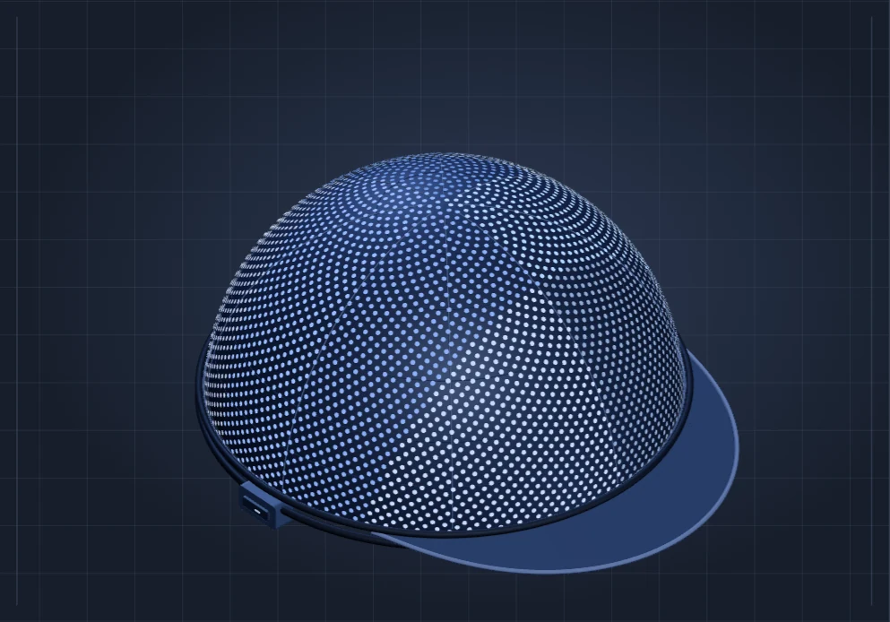
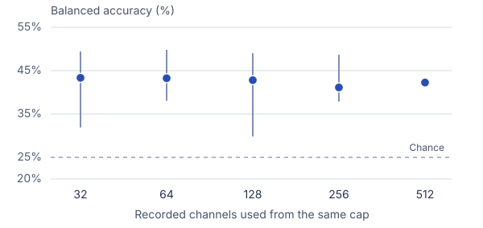

01 / Digital test
480,000 packets
Every signed sample matched in the clean synthetic loopback. Separate tests caught corruption, duplicates and missing tiles.
Read the loopback output ↗Rexzen Neural/Research instrument D4096
A high-density, non-invasive EEG design with one acquisition lane per scalp electrode. Can more usable contacts improve control outside the lab?
Research stage · Digital checks and public-data analysis. No physical D4096 or on-head performance yet.

01 / Workbench
The same number of failed contacts can leave a usable layout or a hole in one part of the array. Inject a fault to see how the proposed gate handles both. This replay runs locally and does not use live EEG.
Predefined faults, not telemetry. The rule is at least 4,000 usable in total, 448 in each sector, and a valid reference and clock.
02 / Evidence
The digital tests verify the simulated data path. The published EEG analysis asks a different question: did more channels help on this task?
01 / Digital test
Every signed sample matched in the clean synthetic loopback. Separate tests caught corruption, duplicates and missing tiles.
Read the loopback output ↗02 / Published EEG
We reran one 80-trial, four-category visual task using subsets of a published 512-channel recording. Accuracy didn’t rise consistently with more channels.
Check the split and controls ↗03 / Still open
Noise, long-wear contact through hair, use while moving and advantage over a lab baseline are unmeasured on Rexzen hardware. No speech or state-of-the-art claim.
Study S03 / Recorded scalp EEG

03 / Prototype gates
Invest in the contact and measurement problem before committing to a full custom array.
Measure contact stability, neighboring shorts and front-end noise on fixtures. Test fit on unpowered headforms before any cleared study.
Quantify reference and timing stability, and benchmark source localization against known electrical sources.
Prove every lane in hardware. After independent safety and study approval, run a blinded, matched comparison against established high-density systems.
04 / Diligence
Use the one-pager in a meeting. Use the specs and data to challenge what it says.